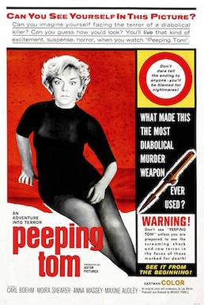

Michael Powell
1960
86 minutes
TITLE: Peeping Tom TEXT PLACEHOLDER 138
This is a nasty little early slasher film by the same guy who did The Red Shoes and Black Narcissus. Not surprisingly, it ruined his reputation as a director, though it ended up being a genre classic. It's pretty lurid and scary for a film of the time, and a bit unusual since there really isn't much mystery to it. You find out right away who the killer is and just follow him around as he does his thing, filming the women he murders on camera.
Time to choose something different: